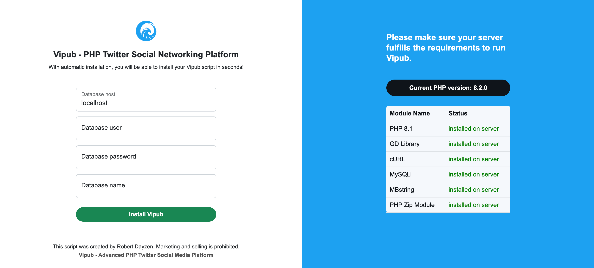
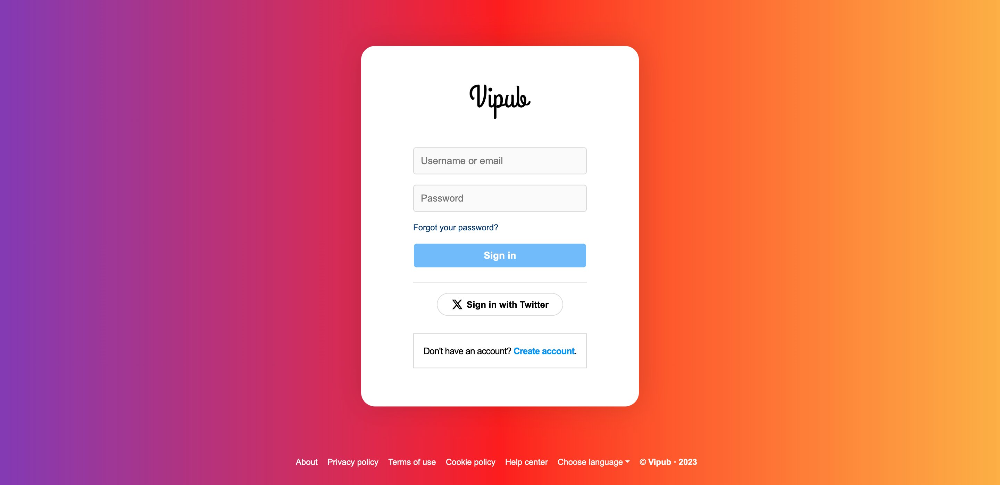

Your rights and technologies used:
What can't you do in this script?
- You cannot copy this script.
- You may not publish or sell this script as your own on CodeCanyon or similar marketplaces.
Remember, you purchased this script only to develop yourself in the software field or to incorporate it into your current project. Publishing and marketing rights for this script are exclusively with Robert Dayzen.
Upload to server and update database information:
First, extract all the file content you downloaded from CodeCanyon to your desktop, and then open the extracted folder and copy (upload) all the files in the "Script files" file to the main directory of your server.
This is usually "www" or "public_html".
After all the files are uploaded to your server, create a new MySQL Database table. (This will be needed in the next step.)
After copying all the files to your server's home directory, visit the "site-name.com/install.php" page.
When you open the install.php page on your browser, you should see the screen you see in the image below.

All of the information contained here should be your new (MySQL Database) information that you have created on your server side.
After successfully completing the first steps 1 and 2, visit your website (www.your-site.com). If your installation was successful, you should see the "Sign in" page you see in the screenshot below.

If you cannot view the page above, you are probably seeing the "code" below.
Fatal error: Uncaught mysqli_sql_exception: Unknown database 'xclone-sm2' in /Applications/XAMPP/xamppfiles/htdocs/core/xclone_web_core.phtml:31 Stack trace: #0 /Applications/XAMPP/xamppfiles/htdocs/core/xclone_web_core.phtml(31): mysqli->__construct('localhost', 'root', Object(SensitiveParameterValue), 'xclone-sm2') #1 /Applications/XAMPP/xamppfiles/htdocs/index.php(10): require_once('/Applications/X...') #2 {main} thrown in /Applications/XAMPP/xamppfiles/htdocs/core/xclone_web_core.phtml on line 31
Your problem is due to the core/dbconnect.phtml file not being able to access the new MySQL Database information you have created. (Incorrect information)
{
Open the "dbconnect.phtml" file in the "core" folder in the main directory of your server with the help of a code editor program. (VS Code, Sublime Text etc.).
Then, replace the relevant contents "db_name, db_user, db_password" with the MySQL information you have created and save.
}
Want to update your script?
Updating Xclone is pretty easy! First, make sure you download the latest version of Xclone from CodeCanyon. https://codecanyon.net/downloads
Extract all the files you have downloaded to your desktop and enter the folder named "Update" and copy all the files in the folder containing the name of the latest version to the main directory of your server. (Example: v1.3 (last)
After copying all the files belonging to the update to your home directory, open the "site-name.com/update.php" page with the help of a browser (Google Chrome is recommended).
When you visit the page, you must have encountered a content in the image below:

Now you can click the "Update Xclone" button to update Xclone quickly. This process may take "2 to 15" seconds or more depending on the speed of your internet connection. Please do not close the page before the update process is 100% finished (without a Success response).
You will be automatically redirected to "Homepage" after successful update.